Technical Budgets and Mission Analysis
This chapter provides an in-depth examination of the Catarina-A1 mission, focusing on both its requirements and a detailed analysis. We examine some key mission-related elements such as: satellite’s orbit, estimated lifetime, and data exchange rate during satellite’s operation and more. Additionally, the chapter delves into the technical budgets that govern key engineering parameters, such as mass, power, and communication links. The overarching goal is to demonstrate the project’s alignment with mission objectives and its capacity to meet specified requirements effectively.
Requirements
This section describes the operational and functional technical requirements for the Catarina-A1. The applicable documents that justify the requirements presented in this document are [33] and [32]. The Mission Requirements and the System Requirements are presented according to the following nomenclature:
REQ-MIS: Mission Requirements;
REQ-CDS: CubeSat Design Specification Requirements;
REQ-PAY: Primary Payload System Requirements;
REQ-SER: Service System Requirement.
Information about the user’s needs, mission goals and objectives, and mission conception are presented in [33]. A color code is applied to the requirements tables to indicate the current status of compliance based on the verification method indicated: green - compliant; red - not compliant; yellow - partial compliant; no color - verification method not yet applied. The justification for each status can be checked in each subsection related to the topic in this document.
Mission requirements
The Mission Requirements are displayed in Table 12, which presents its ID, description and verification method. The respective rationale, traceability, and verification method can be found in the Requirement Justification File [34].
ID |
Description |
Verification Method |
|---|---|---|
REQ-MIS-1 |
Catarina Constellation’s Fleet A must collect data transmitted by DCPs |
Demonstaration |
REQ-MIS-2 |
The Space Segment from Catarina Constellation’s Fleet A must send the collected data to the EMMN |
Testing |
REQ-MIS-3 |
The EMMN must control the Space Segment of Catarina Constellation’s Fleet A |
Testing |
REQ-MIS-4 |
SINDA must be used to distribute the collected data by the Space Segment |
Demonstration |
REQ-MIS-5 |
The linkage DCP-Space Segment must be able to receive not less than 32 bytes per access |
Analysis |
REQ-MIS-6 |
The linkage of data collection must be compatible with ARGOS protocol |
Demonstration |
REQ-MIS-8 |
The linkage EMMN-Space Segment must be able to transport not less than 32 bytes per access |
Demonstration |
REQ-MIS-9 |
The mission data must be compatible with the data structure defined by the SBCD |
Inspection |
REQ-MIS-10 |
Two CubeSats must be successfully designed and integrated by the team |
Demonstration |
REQ-MIS-11 |
The CubeSats must be able of operating in LEO at an altitude between 500 and 650 km and inclination between 20 to 100 degrees |
Demonstration |
System Requirements
The System Requirements applicable to the Catarina-A1 and the Ground Segment are described herein. The System Requirements defined are indicated in the subsections below, divided into three sections: CubeSat Design Specification Requirements, Primary Payload System Requirements, and Service System Requirements. The respective rationale, traceability, and verification method can be found in the Requirement Justification File [34].
CubeSat Design Specification Requirements
The requirements described in the CDS [39], applicable to a 2U CubeSat, are indicated in Table 13. All references in Table 13 are related to [39].
ID |
Description |
Verification Method |
|---|---|---|
REQ-CDS-1 |
All parts shall remain attached to the CubeSats during launch, ejection and operation |
Testing |
REQ-CDS-2 |
Pyrotechnics shall conform to AFSPCMAN 91-710, Volume 3. |
Inspection |
REQ-CDS-3 |
Any propulsion systems shall be designed, integrated, and tested in accordance with AFSPCMAN 91-710 Volume 3. |
Inspection |
REQ-CDS-4 |
Propulsion systems shall have at least 3 inhibits to activation |
Inspection |
REQ-CDS-5 |
CubeSat hazardous materials shall conform to AFSPCMAN 91-710, Volume 3. |
Inspection |
REQ-CDS-6 |
CubeSat materials shall satisfy low out-gassing criteria, as defined in 2.1.7.1 and 2.1.7.2, to prevent contamination of other spacecraft during integration, testing, and launch. A list of NASA approved low out-gassing materials can be found at: http://outgassing.nasa.gov |
Inspection |
REQ-CDS-7 |
CubeSats materials shall have a TML of less than or equal to 1.0 % |
Testing |
REQ-CDS-8 |
CubeSat materials shall have a CVCM of less than or equal to 0.1% |
Demonstration |
REQ-CDS-9 |
The magnetic field of any passive magnets shall be limited to 0.5 Gauss above Earth’s magnetic field, outside the CubeSat static envelope |
Testing |
REQ-CDS-10 |
The CubeSat shall be designed to accommodate ascent venting per ventable volume/area of less than 50.8 meters (2000 inches) |
Demonstration |
REQ-CDS-11 |
The CubeSat shall use the coordinate system as defined in Appendix B. The origin of the CubeSat coordinate system is located at the geometric center of the CubeSat |
Inspection |
REQ-CDS-12 |
The CubeSat configuration and physical dimensions shall conform to the appropriate section of Appendix B |
Testing |
REQ-CDS-13 |
The –Z face of the CubeSat will be inserted first into the dispenser |
Inspection |
REQ-CDS-14 |
No components on the yellow shaded sides (see Appendix B CDS drawings) shall protrude farther than 6.5 mm normal to the surface from the plane of the rail |
Inspection |
REQ-CDS-15 |
Deployables shall be constrained by the CubeSat, not the dispenser. This requirement originates from requirements of most launch providers |
Inspection |
REQ-CDS-16 |
Rails should have a surface roughness less than 1.6 µm |
Testing |
REQ-CDS-17 |
The 1U, 1.5U, and 2U CubeSat separation spring must be centered on the end of the standoff on the CubeSat’s –Z face as per Figure 7 |
Inspection |
REQ-CDS-18 |
At least 75% of the rail should be in contact with the dispenser rails. 25% of the rails may be recessed |
Inspection |
REQ-CDS-19 |
The CubeSat center of gravity shall fall within the ranges specified in Table 2 |
Testing |
REQ-CDS-20 |
The CubeSat structure should be made from aluminum alloy. Note: Typically, Aluminum 7075, 6061, 6082, 5005, and/or 5052 are used for both the main CubeSat structure and the rails. If materials other than aluminum are used, the CubeSat developer should contact the launch provider or dispenser manufacturer |
Inspection |
REQ-CDS-21 |
Any aluminum CubeSat external surfaces, such as rails and standoffs that are in contact with the dispenser rails, shall be hard anodized to prevent any cold welding within the dispenser |
Inspection |
REQ-CDS-22 |
If a CubeSat shares a dispenser with another CubeSat(s), each CubeSat shall employ a mechanism to encourage separation from neighboring CubeSats within the dispenser |
Inspection |
REQ-CDS-23 |
The separation mechanism shall not extend beyond the level of the standoff in a stowed configuration |
Testing |
REQ-CDS-24 |
To prevent CubeSat from activating any powered functions, the CubeSat power system shall be at a power-off state from the time of delivery to the LV through on-orbit deployment |
Inspection |
REQ-CDS-25 |
The CubeSat shall have, at a minimum, one deployment switch, which is actuated while integrated in the dispenser |
Inspection |
REQ-CDS-26 |
In the actuated state, the CubeSat deployment switch shall electrically disconnect the power system from the powered functions |
Testing |
REQ-CDS-27 |
The deployment switch shall be in the actuated state at all times while integrated in the dispenser |
Inspection |
REQ-CDS-28 |
In the actuated state, the CubeSat deployment switch should be at or below the level of any external surface that interfaces with the dispenser or neighboring CubeSat. This ensures that the switch will not damage or interfere with the contacting surface |
Testing |
REQ-CDS-29 |
If the CubeSat deployment switch toggles from the actuated state and back, the satellite shall reset to a pre-launch state, including reset of transmission and deployable timers |
Inspection |
REQ-CDS-30 |
RTC may be permitted, if they satisfy requirements REQ-CDS-29 through REQ-CDS-31 |
Inspection |
REQ-CDS-31 |
RTC circuits shall be isolated from the CubeSat’s main power system |
Testing |
REQ-CDS-32 |
RTC frequencies shall be less than 320 kHz |
Testing |
REQ-CDS-33 |
RTC circuits shall be current limited to less than 10 mA |
Testing |
REQ-CDS-34 |
The RBF pin and all CubeSat umbilical connectors shall be within the designated access port locations if available on the CubeSat’s dispenser. Please contact the manufacturer for specific charging and diagnostic port locations and procedures |
Inspection |
REQ-CDS-35 |
The CubeSat shall include an RBF pin, which cuts all power to the satellite once it is inserted into the satellite |
Inspection |
REQ-CDS-36 |
Access to the CubeSat is not guaranteed during or after integration. The RBF pin shall be removed from the CubeSat before integration into the dispenser, if the dispenser does not have access ports |
Inspection |
REQ-CDS-37 |
The RBF pin shall protrude no more than 6.5 mm from the CubeSat rail surface when it is fully inserted into the satellite |
Inspection |
REQ-CDS-38 |
CubeSats shall incorporate battery circuit protection for charging/discharging to avoid unbalanced cell conditions. Additional manufacturer documentation and/or testing will be required for modified, customized, or non-UL-listed cells |
Inspection |
REQ-CDS-39 |
The CubeSat shall have at least three independent RF inhibits to prohibit inadvertent RF transmission |
Inspection |
REQ-CDS-40 |
The CubeSat shall have at least three independent inhibits to prohibit the inadvertent release of any deployable structures such as antennas or solar panels |
Inspection |
REQ-CDS-41 |
The CubeSat shall have at least three independent RF inhibits to prohibit inadvertent RF transmission |
Inspection |
REQ-CDS-42 |
CubeSats shall comply with their country’s radio license agreements and restrictions |
Inspection |
REQ-CDS-43 |
CubeSat mission design and hardware shall be in accordance with NPR 8715.6 to limit orbital debris |
Analysis |
REQ-CDS-44 |
Any CubeSat component shall re-enter with energy less than 15 Joules |
Analysis |
REQ-CDS-45 |
Developers should be ready to provide orbital debris mitigation data if requested by the licensing agency or launch provider |
Analysis |
REQ-CDS-46 |
All deployables such as booms, antennas, and solar panels shall wait to deploy a minimum of 30 minutes after the CubeSat’s deployment switch(es) are activated during dispenser ejection |
Demonstration |
REQ-CDS-47 |
CubeSats shall not generate or transmit a signal earlier than 45 minutes after on-orbit deployment |
Demonstration |
REQ-CDS-48 |
The dispenser developer will conduct a minimum of one fit check in which the CubeSat flight unit will be inspected and integrated into the dispenser or engineering dispenser to verify the fit. A final fit check will be conducted just prior to integration of the CubeSat flight unit to the dispenser |
Demonstration |
REQ-CDS-49 |
Random vibration testing shall be performed to the levels and duration as defined by the launch provider |
Testing |
REQ-CDS-50 |
Thermal vacuum bakeout shall be performed to ensure proper outgassing of components |
Testing |
REQ-CDS-51 |
Shock testing must be performed as defined by the launch provider |
Testing |
REQ-CDS-52 |
Visual inspection of the CubeSat and measurement of critical areas will be performed per the CIFP (cubesat.org) or as defined by the launch provider |
Inspection |
REQ-CDS-53 |
Qualification testing is performed on an engineering unit that is identical to the flight model CubeSat. Qualification levels will be determined by the launch provider. Both SMC-S-016 and GSFC-STD-7000A are used as guides in determining test levels and durations. The flight model will then be tested to acceptance levels on its own. The launch provider may also require a final acceptance/workmanship random vibration test on the CubeSat and flight dispenser after integration |
Testing |
REQ-CDS-54 |
Protoflight testing is performed on the flight model CubeSat. Protoflight levels will be determined by the launch provider. Both SMC-S-016 and GSFC-STD-7000A are used as guides in determining test levels and durations. The flight model will be tested to protoflight levels on its own. The launch provider may also require a final acceptance/workmanship random vibration test on the CubeSat and flight dispenser after integration. The flight CubeSat shall not be disassembled or modified after protoflight testing. Disassembly of hardware after protoflight testing will require the developer to adhere to the waiver process prior to disassembly |
Testing |
REQ-CDS-55 |
After delivery and integration of the CubeSat into the dispenser, additional testing may be performed on the integrated system. This test ensures proper integration of the CubeSat into the dispenser. Acceptance test levels will be determined by the launch provider. Both SMC-S-016 and GSFC-STD-7000A are used as guides in determining testing levels. The CubeSat shall not be deintegrated at this point. If a CubeSat failure is discovered, a decision to deintegrate the dispenser will be made by the launch provider based on mission safety concerns |
Testing |
Primary payload system requirements
The Primary Payload System Requirements for the Catarina-A1 are described in Table 14.
ID |
Description |
Verification Method |
|---|---|---|
REQ-PAY-01 |
The primary payload shall be a communications system compatible with the DCP |
Demonstration |
REQ-PAY-02 |
All data shall be capable of being traced to the date and time the data was taken |
Testing |
REQ-PAY-03 |
The primary payload shall be compatible with ARGOS-2 protocol |
Inspection |
Service System Requirements
The Service System Requirements for the Catarina-A1 are described in Table 15 and sub-divided into types, namely: functional, operational, interface, environmental, and design.
ID |
Type |
Description |
Verification Method |
|---|---|---|---|
REQ-SER-01 |
Functional |
The Catarina-A1 must receive, store and transmit collected data from data collection plataforms |
Testing |
REQ-SER-02 |
Operational |
The target minimum operational service of the space system shall be 1 year, subjected to confirmation at CDR |
Demonstration |
REQ-SER-03 |
Interface |
The Catarina-A1 satellite shall dialogue with the Ground Segment using telemetry and telecommands |
Testing |
REQ-SER-04 |
Environmental |
The antenna systems of the Catarina-A1 shall operate within the temperature range of -20 to 60 ºC |
Demonstration |
REQ-SER-05 |
Environmental |
The solar panels module of the Catarina-A1 shall operate within the temperature range of -40 to 125 ºC |
Demonstration |
REQ-SER-06 |
Environmental |
The EPS module of the Catarina-A1 shall operate within the temperature range of -20 to 70 ºC |
Demonstration |
REQ-SER-07 |
Environmental |
The OBDH module of the Catarina-A1 shall operate within the temperature range of -25 to 65 ºC |
Demonstration |
REQ-SER-08 |
Environmental |
The communication systems of the Catarina-A1 shall operate within the temperature range of -20 to 60 ºC |
Demonstration |
REQ-SER-09 |
Environmental |
The structure of the Catarina-A1 shall operate within the temperature range of -40 to 80 ºC |
Demonstration |
REQ-SER-10 |
Operational |
The satellite shall comply with the Brazil’s, ITU and IARU (for radioamateur, if applicable) radio license agreements and restrictions |
Inspection |
REQ-SER-11 |
Operational |
The antenna systems of the Catarina-A1 shall be able to send signal at the frequency of 468 MHz |
Inspection |
REQ-SER-12 |
Operational |
The antenna systems of the Catarina-A1 shall be able to receive signal at the frequency of 401-403 and 401,635 MHz |
Inspection |
REQ-SER-13 |
Operational |
The CubeSat shall be able to transmit not less than 32 bytes per access with the Ground Station |
Analysis |
REQ-SER-14 |
Operational |
The Catarina-A1 shall be able to store not less than 32 MB |
Testing |
REQ-SER-15 |
Design - electrical |
The Catarina-A1 shall have an external interface to charge its batteries |
Testing |
REQ-SER-16 |
Design - electrical |
Following flight assembly, engineers should be able to examine the status of the Catarina-A1 via bus |
Testing |
Orbit parameters and analysis
The following analyses were carried out using the GMAT tools, as well as orbit analysis software developed in-house.
Fig. 19 shows the decay data resulting from simulations developed for different initial orbit altitudes and an inclination of \(30^{\circ}\).
{kind=link}
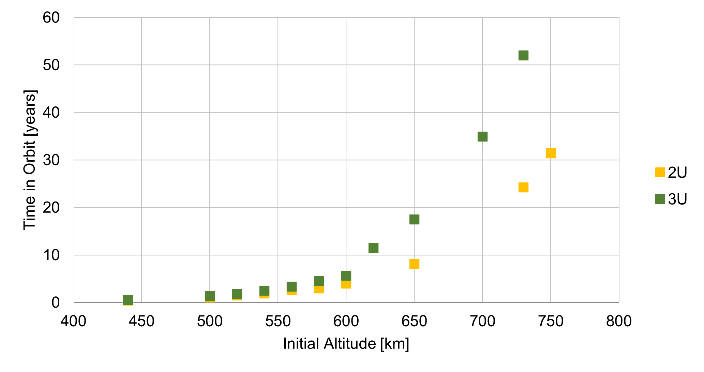
Fig. 19 Fleet A’s space systems orbit decay analysis.
It is verified that once the chosen orbit is smaller than 650 km, the maximum possible lifetime requirement from the standard [12] will be met. For an orbit of 500 km a lifetime in orbit estimated for a 2U is 1.02 years while for a 3U is 1.3 years. Thus the lifetime of the Catarina-A1 for a 500 km orbit is estimated in 1.02 years.
Orbital needs for communication with DCP and ground station
Operation altitude
Operating altitude is set to occur in LEO. Within this scenario, the maximum and minimum operating altitudes of the Catarina-A1 estimated herein are 600 km and 500 km. The 600 km limit is to respect the Space Debris Mitigation Guidelines standard [12] to ensure the space system stays in orbit for less than 25 years while the 500 km limit is the expected orbit altitude for the possible launch being analized for Catarina-A1.
Orbit inclination
The inclination of the orbit has the limitation of allowing the Catarina-A1 nanosatellite to communicate with both the DCP installed in SC and the EMMN on a recurring basis during its operation. In this sense, the orbit range was limited between \(20^{\circ}\) and approximately \(97^{\circ}\) (Sun Syncronous Orbit). For orbit inclinations lower than \(20^{\circ}\) the communication between the space system and the DCP at Santa Catarina is not viable as can be seen in later sections of this document.
Number of communication per day: SS - DCP
The number of times the Catarina-A1 has contact with the DCP at Santa Catarina is indicated below for the orbit inclination of \(20^{\circ}\), \(51^{\circ}\) and \(97^{\circ}\), for the altitudes of 500 and 600 km. Data is presented in different graphs for the minimum number of contacts per day in the month, average number of contacts per day in the month, and maximum number of contacts per day in the month. The average period of each contact is 312 seconds, with a minimum of 30 seconds and a maximum of 410 seconds for all cases analyzed here. Simulations were conducted for the period of 01/06/2023 to 31/05/2024. Since the estimated date for the launch is March 2025, simulations will be updated for the expected date however no significant variations in the presented data is expected.
{kind=link}
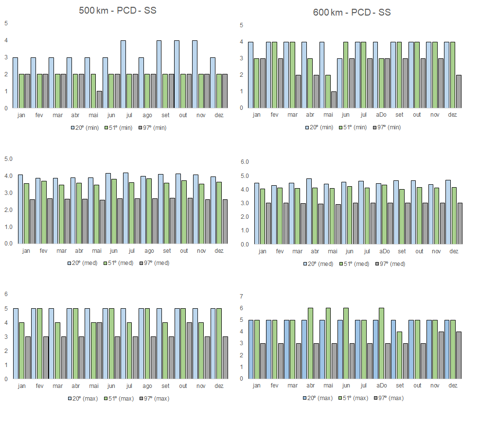
Fig. 20 DCP-SS communication number of times per day per month from 01/06/2023 to 31/05/2024 for altitudes of 500 km (left) and 600 km (right). From top to bottom: Minimum number, average number, and maximum number.
As can be noted, the minimum number of contacts per day for all configurations is 1. As an example, for an altitude of 500 km and inclination of \(97^{\circ}\), in May 2024 at least one day will have only one contact point between DCP and the space system. For the same inclinations, all other months will have at least 2 contacts per day. The average contact number is between 2 to 3 (for \(97^{\circ}\)), 3 to 4 (for \(51^{\circ}\)), and 3 to 4 (for \(20^{\circ}\)). All simulations were carried out with a contact angle of \(10^{\circ}\).
Number of communication per day: SS - EMMN
The same analysis is presented below for the contact point between the space system and the ground station at Natal. Here we can see that the inclination of \(20^{\circ}\) has a much higher number of contact points per day than the other inclinations. However, the minimum contact number for all inclinations and altitudes considered herein is still 1, at least one day in May 2024 and June 2023.
{kind=link}
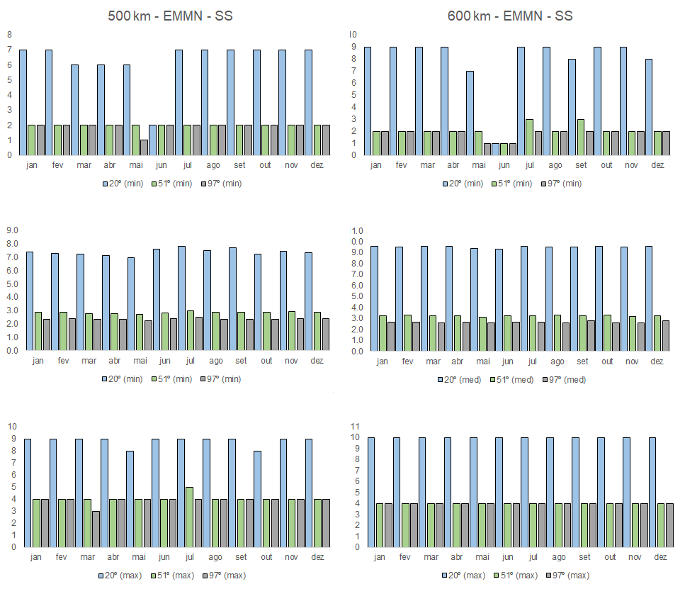
Fig. 21 EMMN-SS communication number of times per day per month from 01/06/2023 to 31/05/2024 for altitudes of 500 km (left) and 600 km (right). From top to bottom: Minimum number, average number, and maximum number.
Transmission time
To evaluate the duration of the communication at each contact point between the space system and the ground station or space system and DCP the duration of the communication in each contact is presented below.
Communication time
The figure below plots the occurrence of each contact point for the altitudes of 500 km and 600 km for the three inclinations analyzed versus the duration of the contact point. On the top-left plot, we can see the duration and the total number of contact points for 500 km for each inclination between DCP and the space system. For example, for the inclination of \(20^{\circ}\), a total of approximately 1440 contact points were estimated through the period of 02/06/2023 to 30/05/2024. Of these 1440 contacts, only 12 contacts had a duration under 50 seconds. Most contacts for all inclinations and altitudes analyzed are concentrated over 200 seconds.
{kind=link}
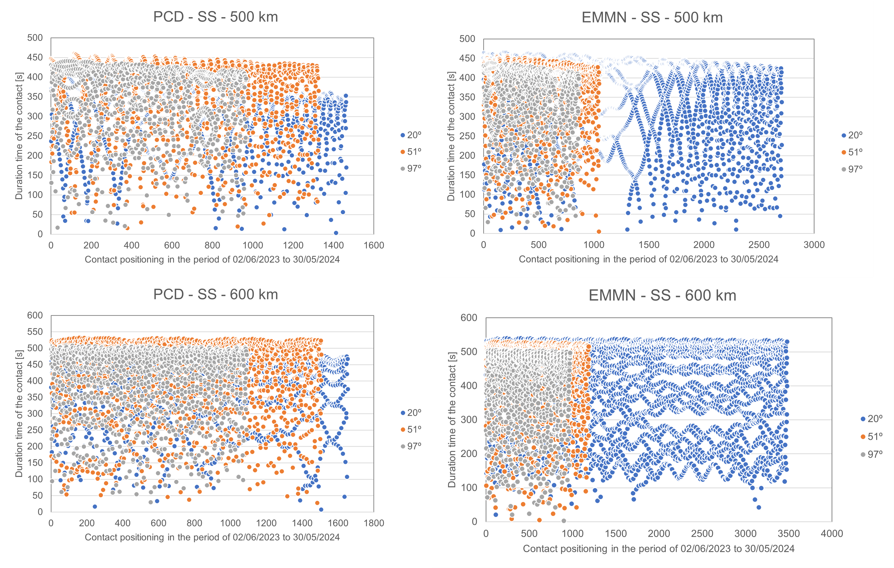
Fig. 22 Communication time from 02/06/2023 to 30/05/2024 for altitudes of 500 km (left) and 600 km (right).
Results indicate that all three orbits analyzed herein can guarantee a minimum contact point between the space system and DCP and ground station of at least 1 per day in the worst-case scenario, indicating that the orbit of \(20^{\circ}\), \(51^{\circ}\), and \(97^{\circ}\) can be used to complete the mission.
However, it is interesting to notice that the orbit inclination of \(20^{\circ}\) has a much higher number of average contact points for both configurations (space system-DCP and space system-GS) and would be a possible good choice for the baseline orbit, based on the parameters analyzed up to this point. Notice that the possible launch for Catarina-A1 is expected to be in a Sun Synchronous Orbit or \(43^{\circ}\), both at 500 km. For this launch condition, communication contacts and time for the Ground Station-SS and SS-DCP are expected to be similar to the ones presented for the \(97^{\circ}\) and the \(51^{\circ}\).
For the altitude, similar results for contact points and duration of contact were encountered except for the configuration of \(20^{\circ}\) and 600 km which resulted in an elevated number of total contact points for the space system and the ground station.
Thermal analysis
[28] and [30] developed a thermal analysis numerical model to estimate the Catarina-A1 in-orbit temperatures for LEO. The analyses were developed using an open-source thermal lumped model coupled to an orbital and incident radiation algorithm and commercial software, independently.
Data presented in this section was estimated before the definition of the possible launch for Catarina-A1 and will be updated. However, similar altitudes and attitudes were considered for cold and hot cases for the idle condition of the space system.
Thermal numerical models
The first model applied a classical lumped model based on the finite differences numerical approach with an explicit method for temporal discretization. The model accounts for thermal contact resistances between each surface of the satellite and the internal radiation heat exchanger. The second model applied the finite volume numerical method through the ANSYS CFX software. Both applied boundary conditions for the thermal irradiation from an orbital simulation code developed in-house. Details about the orbital and thermal models can be found in [28] and [30]. The simplified geometric model is presented in Fig. 23, composed of a 2U CubeSat with solar panels in all external faces, structures, and PCBs. Although Fig. 23 indicates two heat pipes and a battery, these components were not applied to the thermal simulation shown in this section.
{kind=link}
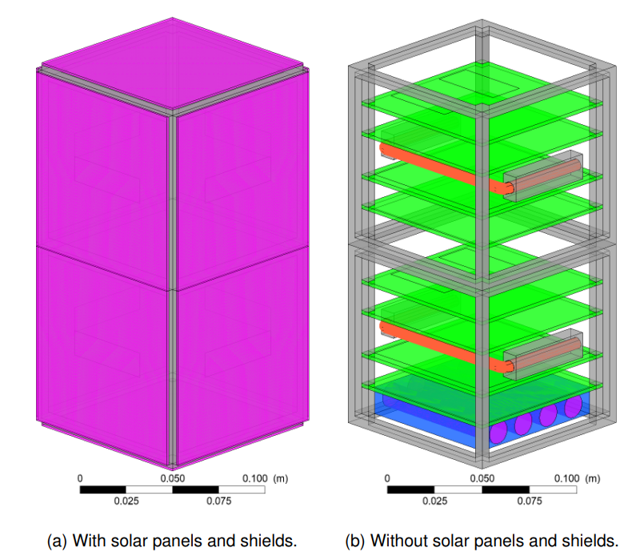
Fig. 23 Geometrical model for thermal analysis
Orbital and thermal parameters analyzed
Table 17 lists the thermal properties of the materials, such as emissivity (\(\epsilon\)), absorptivity (\(\alpha\)), thermal conductivity (\(k\)), density (\(\rho\)), and specific heat (\(c_p\)) for the model proposed by Cardozo et al. [28] while Table 16 lists the thermal properties for the model in [30].
Component |
\(\boldsymbol{\epsilon}\) |
\(\boldsymbol{\alpha}\) |
\(\boldsymbol{k}\) [W/m.K] |
\(\boldsymbol{\rho}\) [kg/m³] |
\(\boldsymbol{c_p}\) [W/kg.K] |
|---|---|---|---|---|---|
Solar panel |
0.6 |
0.68 |
1.03 |
1840 |
712 |
Structure |
0.08 |
0.37 |
130 |
2810 |
1100 |
PCB |
0.22 |
0.07 |
0.82 |
0.25 |
1840 |
Battery |
0.7 |
121.2 |
12.5 |
2122 |
Component |
\(\boldsymbol{\epsilon}\) |
\(\boldsymbol{\alpha}\) |
\(\boldsymbol{k}\) [W/m.K] |
\(\boldsymbol{\rho}\) [kg/m³] |
\(\boldsymbol{c_p}\) [W/kg.K] |
Material |
|---|---|---|---|---|---|---|
Substrate |
0.557 |
0.578 |
148.9 |
2330 |
712 |
Silicon |
Panel Base |
0.76 |
0.70 |
0.81 |
1850 |
1100 |
FR-4.0 |
Panel Base 2 |
0.3 |
0.13 |
121.2 |
2770 |
961 |
Aluminium 7075 |
Upper/Bottom |
0.3 |
0.13 |
121.2 |
2770 |
961 |
Aluminium 7075 |
PCB |
0.76 |
0.07 |
0.81 |
1850 |
1100 |
FR-4.0 |
Vertical Structure |
0.3 |
0.13 |
121.2 |
2770 |
961 |
Aluminium 7075 |
Horizontal Structure |
0.3 |
0.13 |
121.2 |
2770 |
961 |
Aluminium 7075 |
Bolts |
0.3 |
0.13 |
121.2 |
2770 |
961 |
Aluminium 7075 |
For results of incident radiation and temperature per orbit two, fixed orbits were considered. One with a Beta angle of \(0^\circ\) (cold case) and \(72^\circ\) (hot case). Table 18 presents the orbital characteristics of each orbit. The thermal model is prescribed for an attitude of Nadir and altitudes of 500 km and 430 km.
Date |
\(\boldsymbol{a}\) |
i |
\(\boldsymbol{\beta}\) |
|---|---|---|---|
[28] |
500 [km] |
51.36° |
0.0° and 72.0° |
[30] |
430 [km] |
51.63° |
0.0° and 72.0° |
Results: Total incident radiation on each face
The total radiation incident on each face for beta \(0.0^{\circ}\) is presented in Fig. 24. The line colors are equivalent to the face color presented in the schematic of the position of the satellite in orbit for each case. Here again, the eclipse region is visible on the value of the incident radiation on each face.
For this Nadir attitude behavior, face 3 (Total 3) is the face always facing the Earth. As expected, faces 1, 2, and 4 (Total 1, Total 2, and Total 4) receive more radiation due to the direct solar radiation incident on these faces. The beta angle variation from \(0.0^{\circ}\) to \(72.0^{\circ}\) will impact the amount of total radiation incident on the satellite, characterizing here the cold and hot cases based on the incident radiation.
For beta \(72^{\circ}\) (Fig. 25), a sun-synchronous orbit, there is no eclipse region, and all faces, except face 6, have lower incident radiation variation when compared to the beta \(0^{\circ}\) case. However, Face 6 has a greater incidence of radiation due to always facing the sun, which could cause elevated temperatures in this face.
{kind=link}
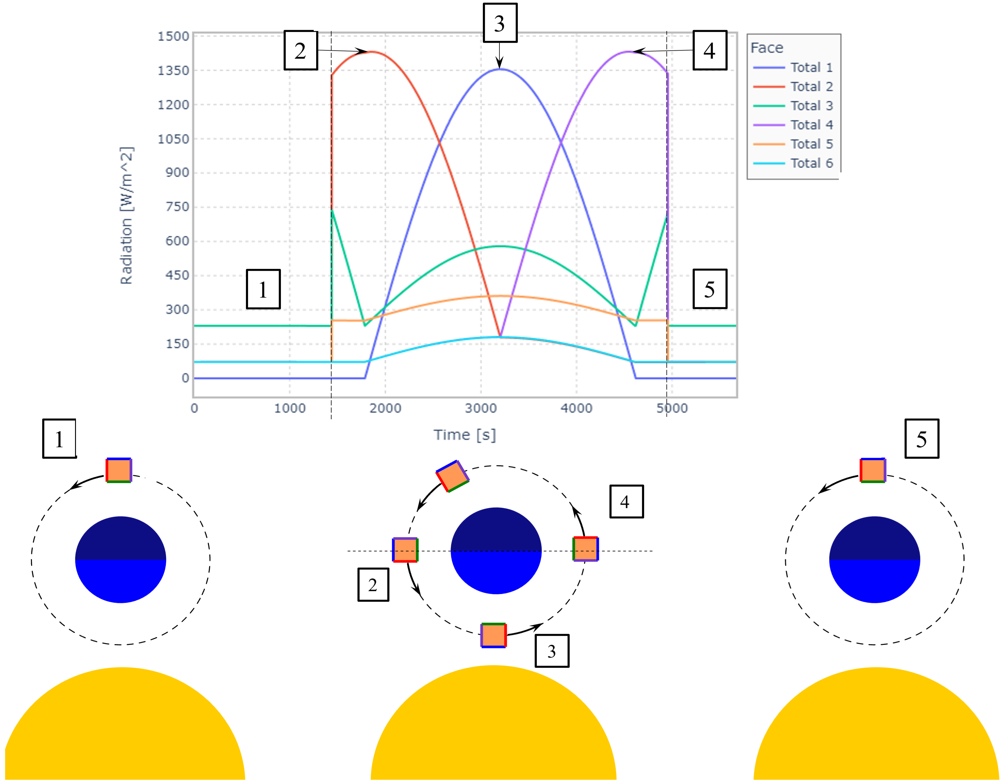
Fig. 24 Total incident radiation on each face of the satellite for a beta angle of \(0.0^{\circ}\).
{kind=link}
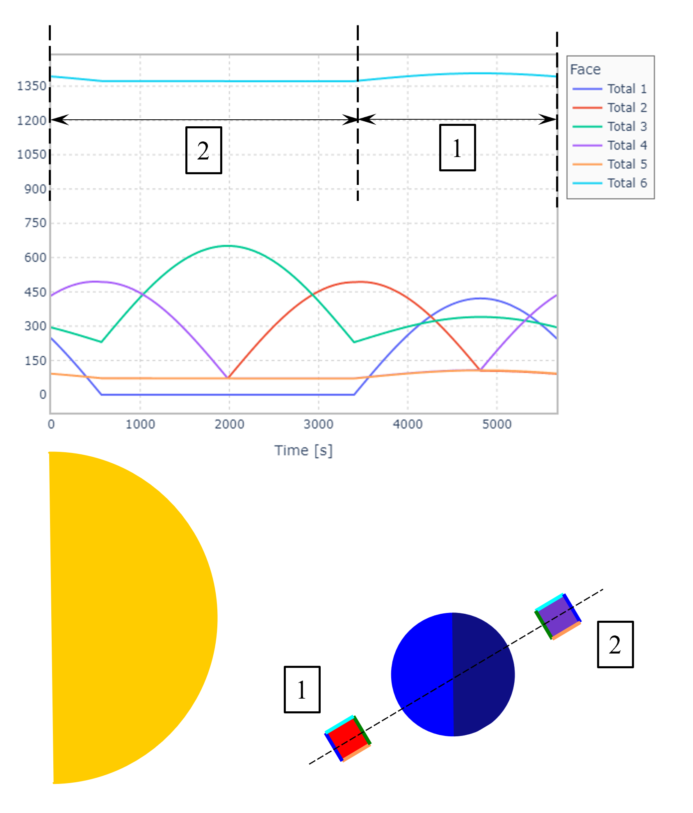
Fig. 25 Total incident radiation on each face of the satellite for a beta angle of \(72.0^{\circ}\).
In Fig. 25, the values marked 1 and 2 represent the satellite behind Earth, and in front of it. As there is no eclipse, the amount of radiation on the upper face is constant, increasing slightly when it passes by 1, as solar radiation adds to the albedo.
Results: Temperature distribution
Temperature profiles for on-orbit for both models are presented in Fig. 26 and Fig. 27 for the cold idle case where can be seen that both models, overall have a good agreement. Since the models for in-orbit irradiance estimations and thermal models were developed independently and based on different models, these results indicate that both in-house developed models have consistent results.
{kind=link}
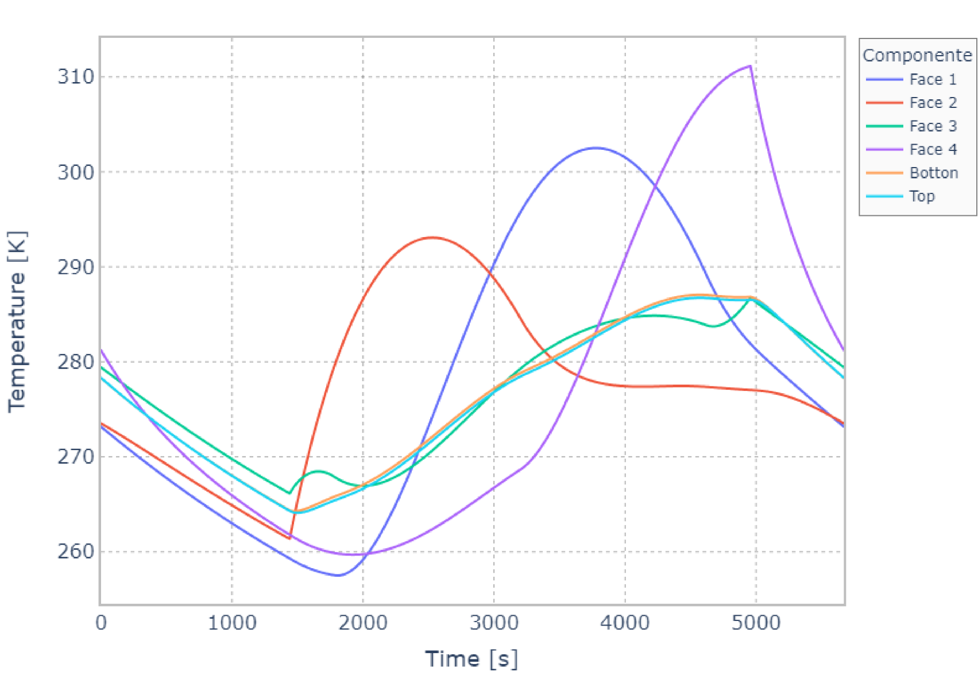
Fig. 26 Solar panels temperatures for a beta angle of \(0.0^{\circ}\) - model from [28].
{kind=link}
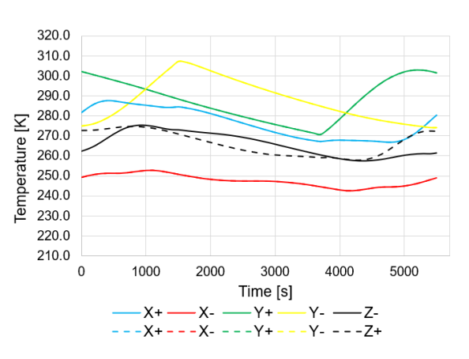
Fig. 27 Solar panels temperatures for beta angle of \(0.0^{\circ}\) - model from [30].
Based on the data provided by the manufacturers of the subsystems used in the design of the Catarina-A1 nanosatellite, Table 19 indicates the maximum and minimum values for the operating temperature of these components.
Fig. 28 indicates in gray the operational temperature range for the solar panels and for the most critical case of internal components and in green the maximum and minimum temperature predicted for the cold and hot cases by both thermal models.
Component |
Min. Temp [°C] |
Max. Temp [°C] |
|---|---|---|
Solar Panels |
-80 |
+80 |
Antennas |
-20 |
+60 |
Structure |
-40 |
+40 |
OBDH |
-25 |
+65 |
TTC |
-20 |
+60 |
EPS |
-20 |
+70 |
ExpLoRa |
-20 |
+85 |
The temperature security margins for the solar panels are more than \(30\ ^{\circ}C\) while for the PCBs are very small for low temperatures. Based on this the assessment chosen by the project team is the addition of heaters near the batteries for thermal control.
It is important to remember that the analyses were carried out for a geometric simplified model and an orbit different from the expected launch. New analyses will be carried out with the correct orbit and critical architecture of Catarina-A1 to confirm these conclusions. Also, TVAC tests at UFSC will be carried out for thermal model validation in the project’s next steps.
However, in-orbit temperature measurements from other CubeSat missions in similar orbits and configurations indicate maximum and minimum temperatures consistent with the ones estimated by the thermal models. The comparison was made with the SwissCube, a 1U CubeSat (orbit inclination of \(98^{\circ}\) and 700 km) and MinXSS 3U Cubesat equipped with battery heaters, a small radiator, and a camera (ISS orbit parameters).
{kind=link}
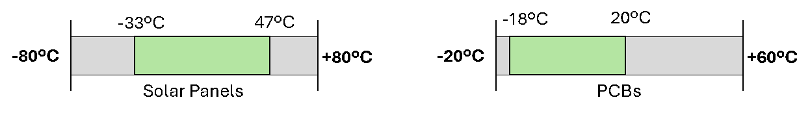
Fig. 28 Predicted temperatures range for preliminary cold and hot cases.
Component |
Temperature range measured in orbit [°C] |
reference |
|---|---|---|
Solar Panels |
-42 to +65 |
MinXSS |
Solar Panels |
-40 to +50 |
SwissCube |
Internal components |
-4 to +58 |
MinXSS |
Internal components |
-20 to +30 |
SwissCube |
Mass budget
As per the CubeSat standard [39], a 1U CubeSat’s weight limit is 2 kg. Since Catarina-A1 is a 2U CubeSat, its maximum allowable mass is 4 kg, based on the current CDS. However, not all launchers promptly adhere to the CDS standards. Therefore, considering the worst-case scenario where the previous regulations apply (stipulating a 1U CubeSat should not exceed 1.33 kg, and consequently, a 2U CubeSat should not surpass 2.66 kg) becomes imperative.
Then, considering the individual weights of each subsystem and incorporating mass margins, the mass budget is detailed in Table 21 for a comprehensive assessment. With the current total mass of the satellite (whether or not mass margins are considered), Catarina-A1 falls within the permissible limits, exhibiting a margin ranging from 4 to 15 %.
Subsystem |
Supplier |
Model |
Mass [g] |
Margin [%] |
Final mass [g] [1] |
|---|---|---|---|---|---|
OBDH |
SpaceLab |
OBDH 2.0 |
53 |
5 |
55.65 |
TTC |
SpaceLab |
TTC 2.0 |
73 |
5 |
76.65 |
EPS |
SpaceLab |
EPS 2.0 |
90 |
5 |
94.5 |
Battery board |
SpaceLab |
BAT4C |
235 |
15 |
270.25 |
TTC’s antenna |
ISISpace |
AntS |
89 |
5 |
93.45 |
ACS |
SpaceLab |
Passive ACS |
52 |
15 |
59.8 |
1st Payload |
INPE |
EDC |
75 |
15 |
86.25 |
2nd Payload |
SpaceLab |
ExpLoRa |
90 |
15 |
103.5 |
Payloads’ antenna |
ISISpace |
AntS |
89 |
5 |
93.45 |
Interface boards |
SpaceLab |
Interface boards |
40 |
5 |
42 |
PC-104 adapters |
SpaceLab |
Adapter boards |
62 |
5 |
65.1 |
Solar panels |
Orbital |
Solar panels |
266 |
15 |
305.9 |
Shields |
Usiped |
Aluminum sheets |
503 |
15 |
578.45 |
Structure |
Usiped |
Structure |
206 |
15 |
236.9 |
Cables |
200 |
15 |
230 |
||
Others |
100 |
15 |
115 |
||
Total |
2277 |
2552.05 |
|||
Maximum |
2666 |
2666 |
|||
Margin |
389 |
113.95 |
Power Budget
Following Section 10.3 of [35], determining the power budget for a satellite involves three key steps:
Estimate the satellite’s power generation capacity and consumption;
Size the battery;
Estimate the power degradation and performance of PV modules over the mission’s lifetime.
Step 1) involves evaluating the power generation capacity and power consumption of the satellite. This assessment aims to ensure a technical surplus, confirming that the satellite generates more energy than it consumes. In step 2), the focus shifts to determining whether the selected battery has sufficient capacity for the application. If a battery has not been chosen yet, this is the stage where it is appropriately sized. Finally, in step 3), the satellite’s behavior as its lifetime approaches the end is analyzed. A comprehensive study, similar to the initial assessment, is conducted to anticipate any required adjustments or adaptations.
Input Power
{kind=link}
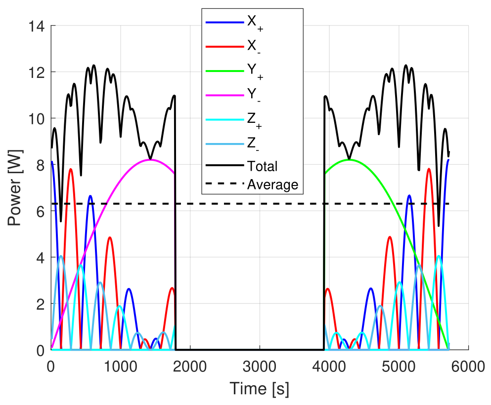
Maximum eclipse.{kind=link}
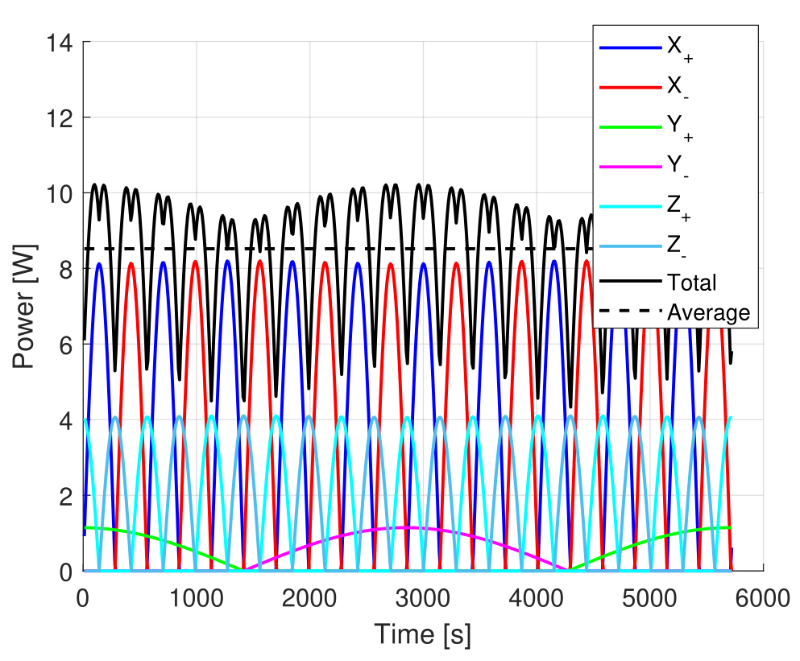
Without eclipse.Fig. 29 Simulated input power of the solar panels.
Parameter |
Variable |
Maximum eclipse |
Without eclipse |
|---|---|---|---|
Peak power [mW] |
\(P_{peak}\) |
12282.7 |
10217.2 |
Orbit Average Power [mW] |
\(P_{OAP}\) |
6306.9 |
8519.6 |
Sun-exposure Average Power [mW] |
\(P_{SAP}\) |
10051.8 |
8519.6 |
Orbit period [s] |
\(T\) |
5720 |
5720 |
Sun-exposure period [s] |
\(T_{S}\) |
3590 |
5720 |
Eclipse period [s] |
\(T_{E}\) |
2130 |
0 |
The simulation results in Fig. 29 depict solar panel power generation in two distinct orbits: one with a maximum eclipse and the other without eclipse. Refer to Fig. 29 for a detailed breakdown of energy production on each side of the CubeSat, including total and average values.
The simulation results provide average power values for the entire orbit and the orbit period, as well as the periods of sun exposure and eclipse. These values are instrumental in building the power budget, and you can find a comprehensive compilation in Table 22. It is essential to highlight that this study takes into account the worst-case scenario illustrated in Fig. 29.
Satellite’s power consumption
To begin with, it is essential to compile a list of typical operating voltages, currents, and power consumptions for each satellite’s subsystem, as presented in Table 23. With this information, Table 24 can be created, considering the operational period of each subsystem and payload, margins, and the maximum acceptable power consumption for each subsystem.
Subsystem |
Typ. voltage operation [V] |
Typ. current operation [mA] |
Typ. power consumption [mW] |
|---|---|---|---|
OBDH 2.0 |
3.3 |
35 |
115.5 |
TTC 2.0 (while not transmiting) |
3.3 |
\(50 \cdot 2\) |
\(165 \cdot 2\) |
TTC 2.0 (while transmiting) |
5 |
\(650 \cdot 2\) |
\(3250 \cdot 2\) |
EPS 2.0 |
7.4 |
50 |
370 |
BAT4C (idle) |
0 |
0 |
0 |
BAT4C (heater operating) |
7.4 |
676 |
5002.4 |
AntS (during deployment) |
3.3 |
550 |
1815 |
AntS (after deployment) |
3.3 |
60 |
200 |
EDC |
5 |
250 |
1250 |
ExpLoRa |
5 |
250 (TBD) |
1250 (TBD) |
Moreover, as presented in Table 24, to ascertain the worst-case scenario certain assumptions were made:
The EDC is assumed to be always on, despite its actual operation only occurring when the satellite passes over Brazil;
ExpLoRa is assumed to be active 30 % of the time, even though its actual operational duration may be even less.
To estimate the satellite’s maximum power consumption, each subsystem’s usage, accounting for operating time and margins, was calculated. The cumulative result, denoted as \(P_{sat}\), was found to be 3784.2 mW.
Where:
\(E_{sat}\) is the required energy by the satellite over a specific period of time.
\(P_{sat}\) is the estimated power required by the satellite.
\(T\) is the time frame of interest.
Subsystem |
Duty cycle [%] |
Typ. power consumption [mW] |
Margin [%] |
Max. power consumption [mW] [2] |
|---|---|---|---|---|
OBDH 2.0 |
100 |
115.5 |
5 |
121.28 |
TTC 2.0 (while not transmiting) |
95 |
330 |
5 |
329.18 |
TTC 2.0 (while transmiting) |
5 |
6500 |
5 |
341.25 |
EPS 2.0 |
100 |
370 |
5 |
388.5 |
BAT4C (idle) |
90 |
0 |
5 |
0.00 |
BAT4C (heater operating) |
10 |
5002.4 |
5 |
525.25 |
AntS (during deployment) |
0 |
1815 |
5 |
0.00 |
AntS (after deployment) |
100 |
200 |
5 |
210 |
EDC |
100 |
1250 |
15 |
1437.50 |
ExpLoRa |
30 |
1250 |
15 |
431.25 |
Total |
3784.2 |
|||
Total [mWh] [3] |
6013.1 |
|||
Maximum [mWh] [4] |
6743.35 |
|||
Margin [mWh] |
730.25 |
Subsequently, the energy consumed by the satellite over an entire orbit (\(E_{sat}\)) was calculated using Equation (1), resulting in 6013.1 mWh, as presented below:
The energy generated by the PV panels, over the entire orbit, was also calculated, considering the value of \(P_{OAP}\) obtained from the simulations.
Where:
\(E_{OAP}\) is the energy generated by the PV panels over the entire orbit.
\(P_{OAP}\) is the average power generated by the PV panels.
\(\eta\) is the efficiency of the EPS’ energy harvesting system.
\(T_{E}\) is the eclipse period.
\(T_{S}\) is the sun-exposure period.
The (2) was used, obtaining 8017.33 mWh. An efficiency of 80 % was considered, which is a worst-case scenario for the efficiency of the EPS’ energy harvesting system. Finally, it is possible to see that there is a margin of 25 % in this first analysis (2004.23 mWh).
Battery Sizing
As described in [35], the battery sizing of a satellite can be made by following the steps below:
Estimate the power required from the satellite;
Define the discharge and charge cycles duration, as well as the numbers of charge-discharge cycles;
Define a maximum ac{DoD};
Define the charge rate;
Compute battery recharge power.
Then, first, the power required from the satellite was already calculated, which is \(P_{sat}\). The discharge and charge cycles duration can be obtained from Fig. 29. The discharge period corresponds to the time the satellite is eclipsed (\(T_{E}\)), just as the charge period corresponds to the time when the satellite is exposed to sunlight (\(T_{S}\)). This is done by considering a single complete orbit.
Now, for the DoD, it is possible to calculate considering the BAT4C, the battery board that was considered to be used in this mission. It is important to emphasize that it supports 4 batteries in a 2P-2S configuration, in which each individual battery has 3.6 V and 2500 mWh of capacity. Furthermore, considering Equation (3), it is important to define \(D_{i}\) (discharge rate) and \(D_{t}\) (discharge period), which are, respectively, equal to \(P_{sat}\) and \(T_{E}\).
Where:
\(DoD\) is the calculated depth of discharge for the battery under specific conditions.
\(D_{i}\) is the discharge rate.
\(D_{t}\) is the discharge period.
\(C\) is the battery capacity in mWh.
As the battery cells are already selected, as well as their configuration, its capacity is equal to 36000 mWh, and the current DoD is computed as 6.22 %. Considering that it is quite common to consider a DoD of no more than 30 %, it can be seen that, for now, the battery is oversized, which is not a problem, as this excess capacity provides a safety margin, ensuring that even under heavy usage scenarios, the battery will not exceed the commonly accepted DoD limit of 30 %.
The charge rate can be estimated from the power generated by the PV panels when the satellite is exposed to sunlight. As presented before, the simulation shows that an \(P_{SAP}\) equals 10051.8 mW. Considering the charge cycle duration as 0.997 h and an efficienfy of 80 % of the satellite’s energy harvesting system, there is a generation of 8017.33 mWh. From Table 24, the power consumption of the satellite in sunlight is 3784.2 mW (or 3772.85 mWh considering the sunlight period). This way, energy input at sunlight is obtained in Equation (4).
From the DoD calculation, the energy consumption during the eclipse is 2240.25 mWh. In this way, the energy margin of the battery becomes positive (\(4244.48 - 2240.25 = 2004.23\ mWh\)), as expected from the previous power budget results. From the results, the battery sizing is well suited for the current satellite configuration and the planned behavior.
Power Degradation Over Mission Life
Two major events along the satellite operation should be considered in the power degradation analysis:
Solar panels degradation
Battery degradation
From [35], 5 % per year is a usual number for the solar panels’ degradation, in other words, the general efficiency of the solar panels decays at a rate of 5 % per year of operation. The Equation (5) can be used to define the PV panels’ efficiency (\(\eta_{EOL}\)) after \(N\) years. Furthermore, it is possible to create the Table 25 to visualize the energy dependence of the satellite over the years.
Where:
\(\eta_{EOL}\) is the PV panels’ efficiency at the satellite’s end of life.
\(\eta_{BOL}\) is the PV panels’ efficiency at the satellite’s begining of life.
\(N\) is the number of years passed.
\(\eta_{degradation}\) is the estimated efficiency degradation over the years.
Parameter |
BOL |
1 year |
2 years |
3 years |
4 years |
5 years |
|---|---|---|---|---|---|---|
\(\eta_{EOL}\) [%] |
30 |
28.5 |
25.72 |
22.05 |
17.96 |
13.9 |
\(P_{OAP}\) [mW] |
6306.90 |
5991.55 |
5407.38 |
4636.15 |
3776.17 |
2921.94 |
\(E_{OAP}\) [mWh] |
8017.33 |
7616.46 |
6873.86 |
5893.48 |
4800.27 |
3714.36 |
\(E_{sat}\) [mWh] |
6013.1 |
6013.1 |
6013.1 |
6013.1 |
6013.1 |
6013.1 |
Margin [mWh] |
2004.23 |
1602.36 |
858.76 |
-122.62 |
-1216.83 |
-2303.74 |
Until the \(3^{rd}\) year, the satellite will generate more power than it consumes. From there, the satellite will start consuming more energy than it can generate, and eventually, it will cease to function. It is worth noting that some considerations have been taken into account, creating a rather pessimistic scenario.
Link Budget
The link budget of all satellite radio links is available in Table 26.
Variable |
Downlink |
Uplink |
Uplink (Payload) |
Unit |
|---|---|---|---|---|
Altitude |
500 |
500 |
500 |
km |
Elevation |
0 |
0 |
0 |
º |
Frequency |
468 |
401 |
401.635 |
MHz |
Modulation |
GMSK |
GMSK |
BPSK |
|
Protocol |
NGHam |
NGHam |
SBCD |
|
Transmit power |
30 |
44 |
30 |
dBm |
Transmitter antenna gain |
0 |
12 |
3 |
dBi |
Receiver antenna gain |
12 |
0 |
0 |
dBi |
FSPL |
154.1 |
138.5 |
152.7 |
dB |
Power at receiver |
-117.1 |
-101.7 |
-124.7 |
dBm |
Receiver sensibility |
-134 |
-126 |
-128 |
dBm |
System losses |
5 |
5 |
5 |
dB |
Receiver noise temp. |
361.7 |
361.7 |
361.7 |
K |
Antenna noise temp. |
300 |
300 |
300 |
K |
System noise temp. |
661.7 |
661.7 |
661.7 |
K |
Data rate |
4800 |
4800 |
400 |
bps |
Received SNR |
16.48 |
31.88 |
19.67 |
dB |
SNR required for \(10^{-5}\) BER [5] |
9.6 |
9.6 |
9.6 |
dB |
Link margin |
\(\geq\) 6.88 |
\(\geq\) 22.28 |
\(\geq\) 10.07 |
dB |
As can be seen, considering the worst case for the estimated orbit, that is, with the satellite on the horizon and with an elevation of zero degrees, the margin of all links is positive with a considerable balance.
All equations and steps used to obtain the results of Table 26 are available in Link Budget Calculation.